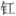

欲尽时①
，乍凉秋气满屏帏。梧桐叶上三更雨，叶叶声声是别离②
。 调宝瑟，拨金猊③
，那时同唱鹧鸪词④
。如今风雨西楼夜，不听清歌也泪垂。
欲尽时①
，乍凉秋气满屏帏。梧桐叶上三更雨，叶叶声声是别离②
。 调宝瑟，拨金猊③
，那时同唱鹧鸪词④
。如今风雨西楼夜，不听清歌也泪垂。鹧 鸪 天
周紫芝
一点残
欲尽时①
，乍凉秋气满屏帏。梧桐叶上三更雨，叶叶声声是别离②
。 调宝瑟，拨金猊③
，那时同唱鹧鸪词④
。如今风雨西楼夜，不听清歌也泪垂。
【注释】
①

：灯。 ②“梧桐”二句：温庭筠《更漏子》：“梧桐树，三更雨，不道离情正苦。一叶叶，一声声，空阶滴到明。” ③金猊：指狮子形的香炉。猊，狻猊，即狮子。 ④鹧鸪词：《异物志》：“鹧鸪其志怀南，不思北徂（往也），南人闻之则思家，故郑谷诗云：‘坐中亦有江南客，莫向春风唱鹧鸪。’（《席上赠歌者》）”唐时已有《鹧鸪天》之曲。【语译】
当油灯的一点火焰将要熄灭的时候，刚刚转凉的秋气已充满了摆着屏风、垂着帷幕的室内。半夜里的雨打在梧桐树叶上，每片叶子、每滴雨声，都在诉说着别离的痛苦。
那时候，我们弹奏着精美的瑟，拨弄着金狮香炉，曾一同唱起《鹧鸪天》的曲子。如今我却独自在西楼度过这风雨之夜，即使不听动人的歌声，也禁不住流下了眼泪。
【赏析】
这是一首别离相思词。
“一点残 欲尽时”，说夜已深。李白《长相思》乐府云：“孤灯不明思欲绝，卷帷望月空长叹。”这里也有借“残 欲尽”暗示“思欲绝”的作用在。接一句室内气氛的描写。宋玉《九辩》：“悲哉，秋之为气也！”这深夜里“满屏帏”的“秋气”，给人的感受如何，自不难想像。“乍凉”，固然是人体对气温的感觉。但何尝没有内心对别后凄凉的体验在呢。“梧桐”二句，点清夜已“三更”，窗外正有风雨，怪不得室内“乍凉”。化用温飞卿词意写离情，自妥帖，且也有变化。温词中离情是离情，雨打叶声是雨打叶声，两者只是配合，而这里说“叶叶声声是别离”，则已合而为一了。这就有创新。
换头“调宝瑟，拨金猊”是写追忆中昔日闺中之乐，因为下句有“那时”二字，语意是同时管住前面的。那时，他们弹瑟焚香，还同唱一只歌，感情之亲密无间，并不逊于古人所谓的“窈窕淑女，琴瑟友之”。“同唱”之“词”，必称“鹧鸪”，想来其用意有三：（一）恰好与此词之词牌名同；（二）鹧鸪常雌雄成双，其意象同于鸳鸯、蝴蝶，如温飞卿《菩萨蛮》云：“新贴绣罗襦，双双金鹧鸪。”（三）唱此词能引起想思，尤其对“南人”是如此，故有“坐中亦有江南客，莫向春风唱鹧鸪”的诗。而周紫芝为宣城人，恰好是“江南客”。所以，幸福的时刻同唱此词不以为意，离别之后回想起来，不待再听歌就已垂泪了。“那时”、“如今”，时间的转换，交待得明明白白。“风雨西楼夜”，用作与闺中的温馨生活的对照，又与秋夜梧桐雨的描述首尾相应。